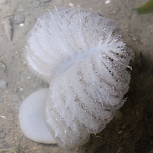
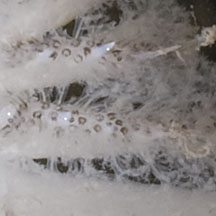
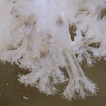
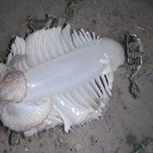
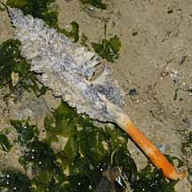
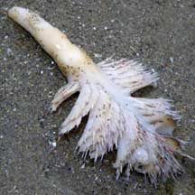

|
|
| sea pens text index | photo index |
| Phylum Cnidaria > Class Anthozoa > Subclass Alcyonaria/Octocorallia > Order Pennatulacea |
| Spiky
sea pen Pteroeides sp.* Family Pennatulidae updated Dec 2019 Where seen? This feathery colony is sometimes seen on our Northern shores. In soft silty sand and near seagrasses. The colony does not harbour symbiotic algae (zooxanthellae) and can thus thrive in murky water. Features: Those seen on our shores are about 15-20cm long (but some species of Pteroides are said to grow to 60cm long!). According to Reef Corals of the Indo-Malayan Seas globally, there are about 17 species of Pteroeides. Each colony is stout and feather-like. Made up of a sausage-like 'stem' some are plain, others with brown blotches. Some have an orange 'foot', usually buried and seen only in uprooted sea pens. Short (2-3cm) leaf-like structures symmetrically on both sides of the 'stem'. These 'leaves' supported by rays of many long needle-like sharp spikes that stick out of the leaf edge. Usually white or beige, sometimes brown or pale orange. When exposed at low tide, the central stalk is often bent over in half so the colony looks like a limp feather. Tiny feeding polyps (autozooids) with 8 branched tentacles emerge from these 'leaves' when submerged. The autozooids can retract completely, leaving tiny bumps on the 'leaf' edges. The colony also has another kind of polyp that sucks in water (siphonozooids) and which are minute, numerous and crowded near edges of the 'leaves'. |
 Changi, Jul 12 |
 Autozooids emerging from the 'leaf' edge. Changi, Jul 12 |
 Tiny polyps. Pulau Sekudu, Aug 13 |
| Pen pals: The tiny Painted porcelain crab (Porcellanella picta) is often found in this sea pen. Sometimes a pair is seen in one sea pen, at other times, many are seen. Washed up sea pens sometimes seen with colourful brittle stars and other brittle stars. Less friendly animals associated with it are nudibranchs that eat them! |
 Bent over at low tide Changi, Jul 04 |
 A nudibranch that eats sea pens is lurking near this one. Beting Bronok, Jun 18 |
 Sometimes seen uprooted with orange foot. Pasir Ris, Dec 08 |
*Species are difficult to positively identify without close examination.
On this website, they are grouped by external features for convenience of display.
| Spiky sea pens on Singapore shores |
On wildsingapore
flickr
|
| Other sightings on Singapore shores |
 Tanah Merah, Feb 09 |
|
Links
eferences
|